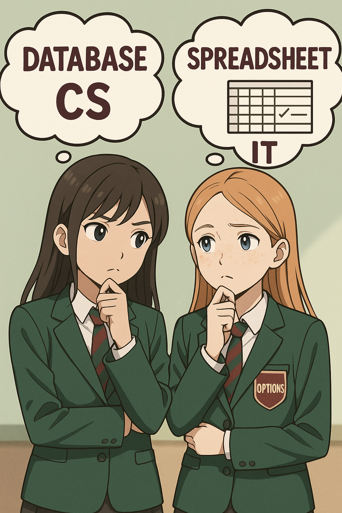
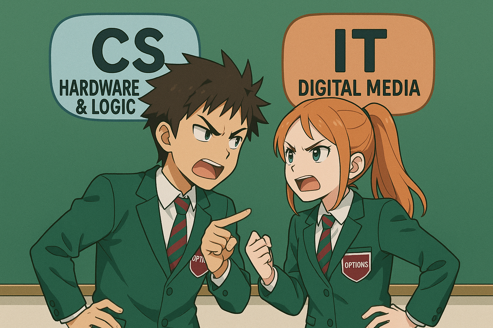

Lesson 1 CS vs IT (Overview) What each pathway is about; try a quick task from both. Open Teacher Guidance
Lesson 2 Flowcharts (CS) vs Forms (IT) Plan algorithms clearly; match form logic to decisions. Open Teacher Guidance
Lesson 3 Binary (CS) vs Excel (IT) Convert 0–255 to 8-bit binary & hex; build an Excel converter. Open Teacher Guidance
Lesson 4 Images & Colour (CS) vs Slide Design (IT) Pixels, colour depth, file size; make clearer slides. Open Teacher Guidance
Lesson 5 Networks (CS) vs Sharing & Permissions (IT) LANs with router/switch; set view vs edit access correctly. Open Teacher Guidance
 Lesson 6 Spreadsheets (IT) vs Databases (CS) SQL Island practice; evidence with screenshots in OneNote. Open Teacher Guidance
Lesson 7 Operating Systems (CS) vs File Management (IT) UI, memory, process & file systems; smart naming + backups. Open Teacher Guidance
 Lesson 8 Logic (CS) vs Digital Media (IT) AND/OR/NOT truth tables; export PNG vs JPEG and compare. Open Teacher Guidance
Lesson 9 Cybersecurity (CS) vs Digital Footprint (IT) Spot phishing, use 2FA; audit and improve privacy settings. Open Teacher Guidance
Lesson 10 Assessment & Review Retrieval across CS & IT; celebrate strengths and next steps. Open Teacher Guidance